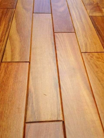
Duelas
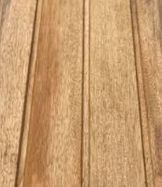
Duela panelada Duela de chonta
Duela de chonta
 Duelas biseladas
Duelas biseladas
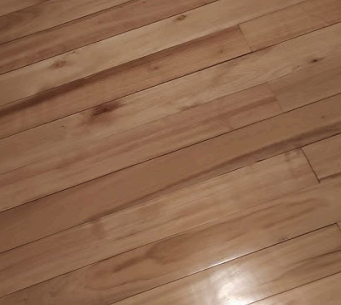
Duela de pinos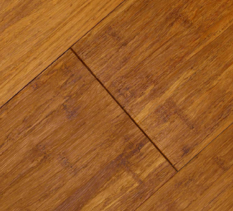
Duela de eucalipto 2 X 1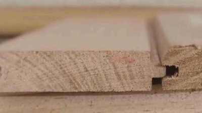
Duelas para tendido de camas
Rastreras
 Rastrera de 6cm
Rastrera de 6cm
 Rastrera de 9cm
Rastrera de 9cm
 Rastrera de 6cm
Rastrera de 6cm
 Rastrera de 9cm
Rastrera de 9cm
📐 Medidas personalizadas según tus
necesidades
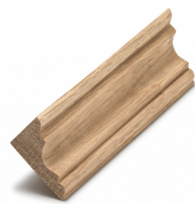
Cornisas
 Cornisa Modelo 1
Cornisa Modelo 1
 Cornisa Modelo 2
Cornisa Modelo 2
 Cornisa Modelo 3
Cornisa Modelo 3
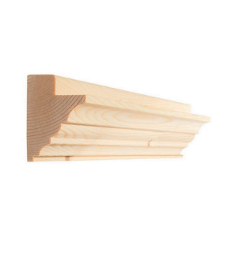
Cornisa Modelo 4
Locado de madera
 Acabado Mate
Acabado Mate
 Acabado Semibrillante
Acabado Semibrillante
 Acabado Brillante
Acabado Brillante
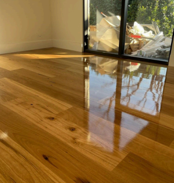
Protección Alta Gama
Mangón para pasamanos
Mangon 1
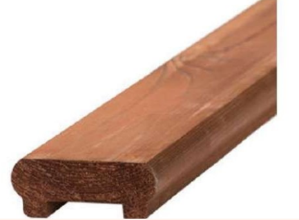
Mangon 2
📐Medida de 8cm de ancho desde los 8.00$
Precio varia según la madera
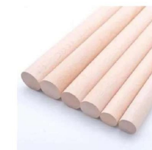
Bolillos
Ideal para cortineros , closets
📐Medidas : 3CM de diametro
MADERAS: TEKA SEIQUE CANELO-LAUREL
📐Medidas : 3CM de diametro
MADERAS: TEKA SEIQUE CANELO-LAUREL

Tarugo
Elemento esencial para unir piezas de madera o fijar
objetos de forma segura sobre superficies sólidas.
📐Medidas : 12MM - 8MM - 6MM
MADERA: EUCALIPTO - CHANUL
📐Medidas : 12MM - 8MM - 6MM
MADERA: EUCALIPTO - CHANUL
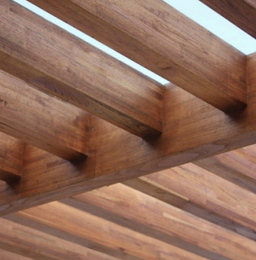
Vigas avino
Madera de excelente resistencia y durabilidad, ideal
para estructuras y trabajos de madera vista gracias a su atractivo color natural. Puede
mantenerse únicamente con aceites, sin necesidad de lacado.
📐Medidas : 7*14 hasta 6MTS largo
📐Medidas : 7*14 hasta 6MTS largo
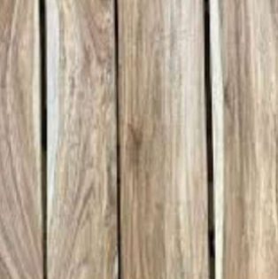
Laurel
Madera liviana, versátil y fácil de trabajar,
caracterizada por su tono claro con veteado (jaspe) en marrón oscuro.
📐Medidas : TABLON : GROSOR 4CM X 290CM DE LARGO X 20CM ANCHO TABLA : GROSOR 1.8CM X 290CM DE LARGO X 20CM ANCHO
📐Medidas : TABLON : GROSOR 4CM X 290CM DE LARGO X 20CM ANCHO TABLA : GROSOR 1.8CM X 290CM DE LARGO X 20CM ANCHO

Pino
El pino es una madera resistente y de dureza media,
ideal para interiores. Se distingue por su tono claro y la presencia de nudos naturales, los
cuales aportan un atractivo acabado rústico a los muebles.
📐Medidas : TABLON: GROSOR 4CM X 290CM LARGO X 20CM ANCHO TABLA: GROSOR 1.8CM X 290 CM LARGO X 20CM ANCHO
📐Medidas : TABLON: GROSOR 4CM X 290CM LARGO X 20CM ANCHO TABLA: GROSOR 1.8CM X 290 CM LARGO X 20CM ANCHO
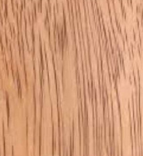
Seiquel
El seiquel es una madera versátil y fácil de trabajar
que ofrece buenos resultados. Se caracteriza por ser fácil de aserrar, no presentar resistencia
al clavado y ser resistente a las polillas, siendo una opción excelente para trabajos en
exteriores.
📐Medidas :TABLON: GROSOR 4CM X 290CM LARGO X 20CM ANCHO TABLA: GROSOR 1.8CM X 290 CM LARGO X 20CM ANCHO
📐Medidas :TABLON: GROSOR 4CM X 290CM LARGO X 20CM ANCHO TABLA: GROSOR 1.8CM X 290 CM LARGO X 20CM ANCHO

Canelo
Madera de peso y dureza intermedios, estéticamente
atractiva; ideal para muebles y molduras, pero requiere protección en exteriores.
📐Medidas :TABLON: GROSOR 4CM X 290CM LARGO X
20CM ANCHO
TABLA: GROSOR 1.8CM X 290 CM LARGO X
20CM ANCHO